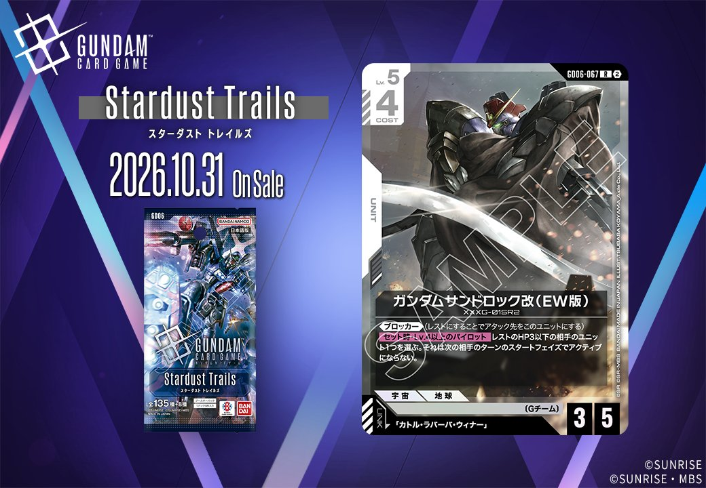

拡張パック「Stardust Trails（GD06）」より、白のUNIT2枚を紹介します。「ガンダムヘビーアームズ改（EW版）」（GD06-068、リンク:「トロワ・バートン」）と「ガンダムサンドロック改（EW版）」（GD06-067、リンク:「カトル・ラバーバ・ウィナー」）で、いずれも発売日は2026-10-31です。

ガンダムヘビーアームズ改（EW版） (GD06-068)
| 色 | 白 | タイプ | UNIT |
| Lv | 4 | コスト | 3 |
| AP | 4 | HP | 3 |
| 特徴 | 〔Gチーム〕 | ||
| リンク条件 | 「トロワ・バートン」 | ||
効果: 【配備時】Lv.3以下の相手のユニット1つを選ぶ。それをレストにし、このユニット以外の、〔Gチーム〕/〔プリベンター〕の自分のユニットがいるなら、このターン中、その相手のユニットをAP-2する。
COST3でAP4/HP3と標準的なステータスを持ちつつ、【配備時】にLv.3以下の相手ユニット1つをレストにできる白のGチームユニット。さらに〔Gチーム〕/〔プリベンター〕の自分のユニットが場にいれば、そのターン対象をAP-2まで下げられるため、レストと弱体化を同時に押し付けられる。 リンク先は「トロワ・バートン」。同じくレスト付与を持つガンダムデスサイズヘル（EW版）はレストの相手ユニットを配備ターンにアタック先へ選べるため、この配備時レストがそのアタック先を作る動きに繋がる。2026年10月31日発売のStardust Trailsのカード。

ガンダムサンドロック改（EW版） (GD06-067)
| 色 | 白 | タイプ | UNIT |
| Lv | 5 | コスト | 4 |
| AP | 3 | HP | 5 |
| 特徴 | 〔Gチーム〕 | ||
| リンク条件 | 「カトル・ラバーバ・ウィナー」 | ||
効果: 《ブロッカー》(レストにすることでアタック先をこのユニットにする)【セット時】Lv.4以上のパイロットをセットしたとき、レストのHP3以下の相手のユニット1つを選ぶ。それは次の相手のターンのスタートフェイズでアクティブにならない。
COST4でAP3/HP5に《ブロッカー》を備え、防御面で安定した性能を持つ白のGチームユニット。【セット時】でLv.4以上のパイロットをセットすると、レストのHP3以下の相手ユニットを次の相手ターンにアクティブにさせず、相手の展開を遅らせられる。 リンク先の「カトル・ラバーバ・ウィナー」(GD05-100)は【セット時】でLv.5以下の相手ユニットをレストにできるため、このユニット自身の効果対象となるレスト状態を能動的に作れる点が噛み合う。ただし両効果は同じ【セット時】でも別々のパイロット搭載時に発動する点に注意したい。2026-10-31発売。
関連カード
-
 ウイングガンダムゼロ（EW版）(GD05-067)白系デッキ内採用率0.9% (50デッキ)
ウイングガンダムゼロ（EW版）(GD05-067)白系デッキ内採用率0.9% (50デッキ) -
 ヒイロ・ユイ(GD05-098)白系デッキ内採用率0.3% (16デッキ)
ヒイロ・ユイ(GD05-098)白系デッキ内採用率0.3% (16デッキ) -
 カトル・ラバーバ・ウィナー(GD05-100)白系デッキ内採用率0.3% (14デッキ)
カトル・ラバーバ・ウィナー(GD05-100)白系デッキ内採用率0.3% (14デッキ) -
 ガンダムデスサイズヘル（EW版）(GD05-078)白系デッキ内採用率0.1% (6デッキ)
ガンダムデスサイズヘル（EW版）(GD05-078)白系デッキ内採用率0.1% (6デッキ) -
 リーオー(GD05-077)白系デッキ内採用率0.1% (6デッキ)
リーオー(GD05-077)白系デッキ内採用率0.1% (6デッキ) -
 トロワ・バートン(GD05-099)白系デッキ内採用率0% (0デッキ)
トロワ・バートン(GD05-099)白系デッキ内採用率0% (0デッキ)